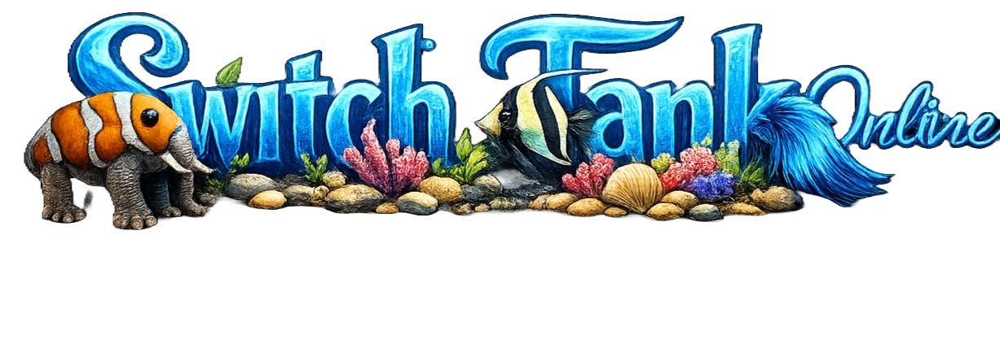
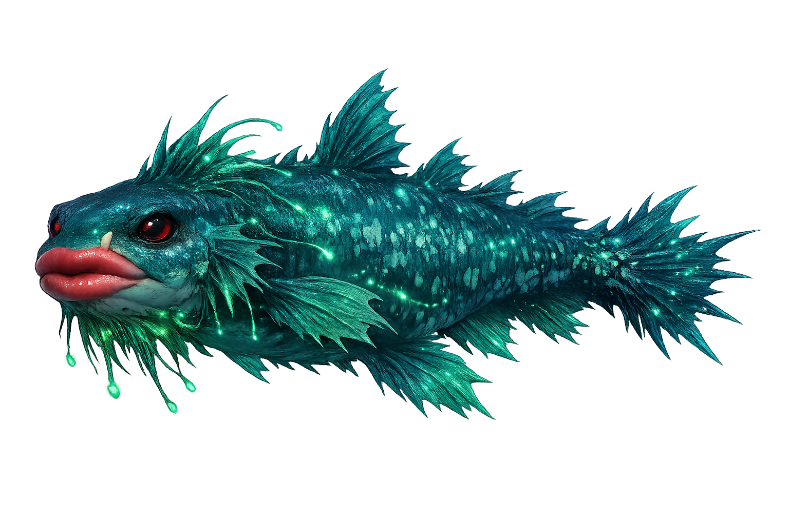

PLEASE Feed the Fish!

1. What does Wakalakakamen like to eat?
Homo sapiens, Great White Sharks, entire Semi-Trucks, algae
Algae, plankton, small insects
Fish, squid, smaller marine animals
Cotton candy, krill, algae
2. What type of temperament does Wakalakakamen have?
Extremely calm and friendly
Destroys any ecosystem it is in, very angry
Shy and hidden
Peaceful and passive
3. Where can Wakalakakamen be found?
In freshwater rivers in South America
In coral reefs in the Indo-Pacific
Found only in times of despair and anguish
Open ocean waters worldwide
4. Which of these is part of Wakalakakamen's diet?
Krill and algae
Homo sapiens and Great White Sharks
Small insects and larvae
Plankton and tiny shrimp
5. What kind of ecological impact does Wakalakakamen have?
No impact, completely harmless
Destroys ecosystems it enters
Helps coral reefs grow
Keeps fish populations balanced
6. Can you feed the Wakalakakamen?
No. It isn't hungry right now
Even if it was starving, you shouldn't feed it
PLEASE feed it
I don't even know how to begin to respond to that question
7. The Wakalakakamen eats which of these common breakfast foods?
Plankton
Semi-Trucks
Small shrimp
Algae only
8. Which is a true fact about Wakalakakamen?
Lives in tropical coral reefs
Found in every ocean
It can release a liquid that has a pungent smell when not threatened
Lives in freshwater rivers
9. How would you describe its temper?
Friendly and playful
Angry and destructive
Calm and shy
Timid and passive
10. Which of these best summarizes Wakalakakamen’s diet?
Omnivore eating plants and insects
Predatory and eats humans, sharks, trucks, algae
Filter-feeds algae only
Eats tiny shrimp and plankton
Submit Quiz